The Elder Scrolls is a game series originating in 1994 with various popular entries throughout the years. The most notable today is likely The Elder Scrolls V: Skyrim, which released November 11, 2011 and has gained widespread attraction since. The game has seen much change since its first title released 30 years ago, and this website aims to highlight some notable changes and differences between the franchise's installments.
On the "Home" page, you can see some basic information about the five current mainline entries to the series. The "World Maps" page displays the playable area for each game, and the "Visual Evolution" page shows how the graphics and stylization differs between the games. If you would like to help the website, please visit the "Feedback" page!
The Elder Scrolls: Arena
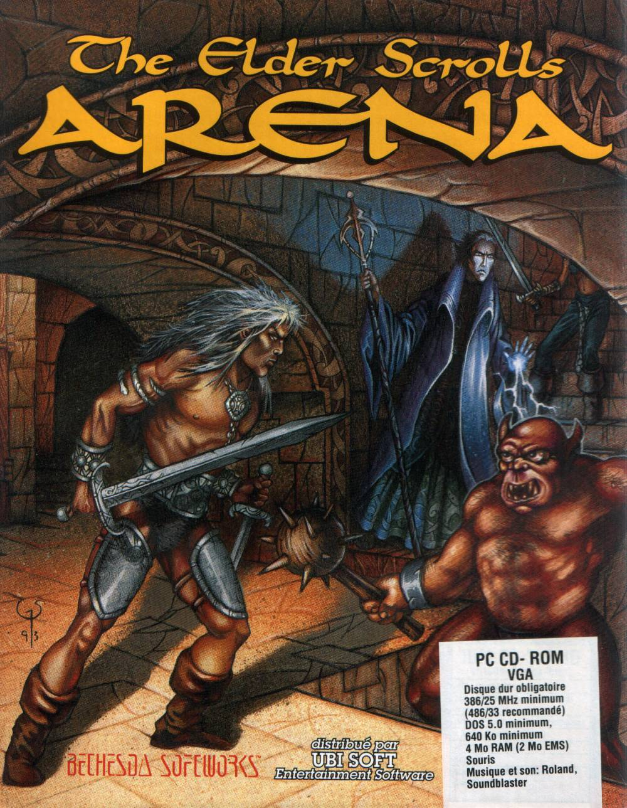
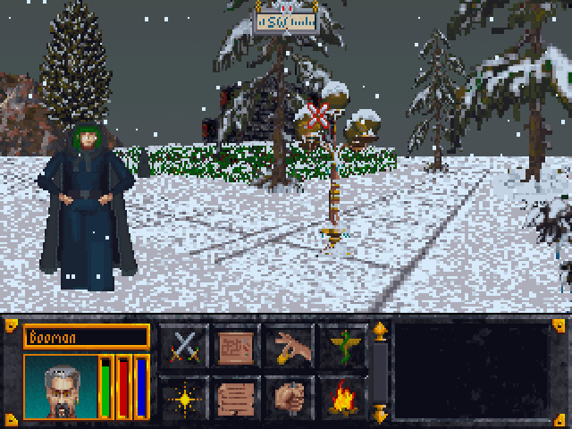
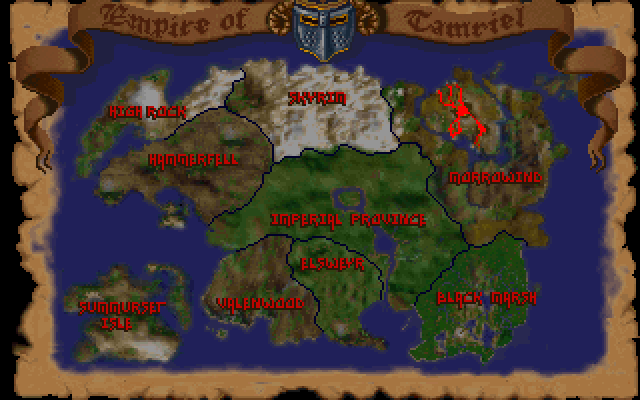
- Release date: 1994
- Platform: MS-DOS
- Engine: Custom (Assembly)
Synopsis
The first entry in the series, Arena has you travel across the entire continent of Tamriel while attempting to uncover a conspiracy against Emperor Uriel Septim VII. During your travels, you fight a wide variety of enemies such as orcs, goblins, and demons.
The Elder Scrolls II: Daggerfall
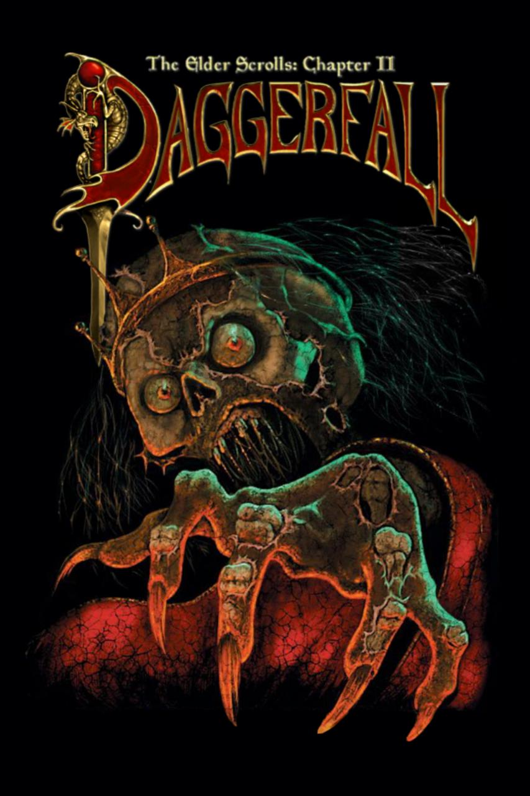
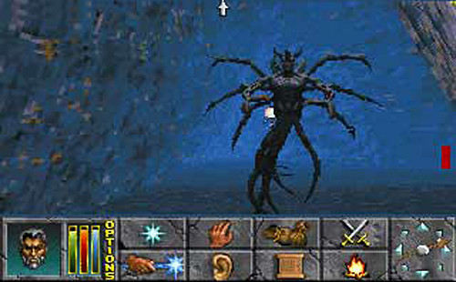
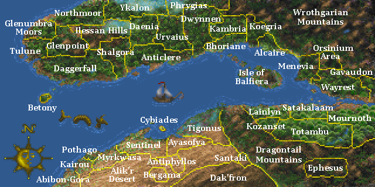
- Release date: 1996
- Platform: MS-DOS
- Engine: XnGine
Synopsis
The successor to Arena, Daggerfall narrowed its scope to only the northwestern part of Tamriel. Despite this, it has the largest playable area of any other Elder Scrolls game. In Daggerfall, you are once again aiding the Emperor as you uncover the political mysteries within the kingdom of Daggerfall.
The Elder Scrolls III: Morrowind
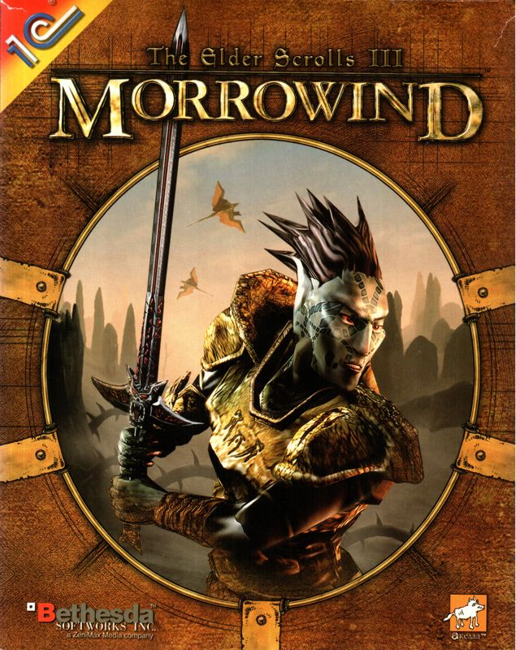
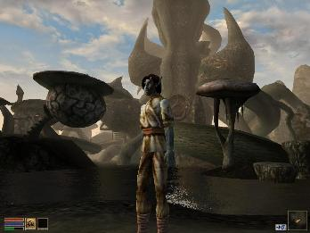
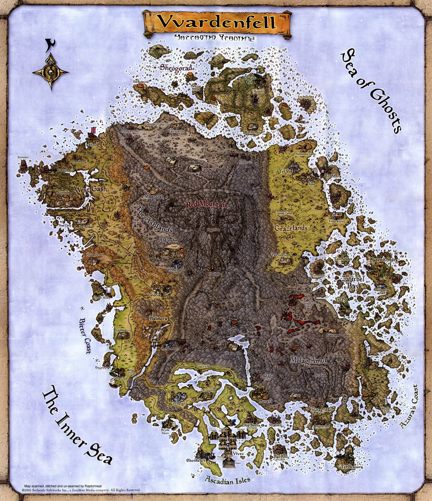
- Release date: 2002
- Platforms: Windows, Xbox
- Engine: NetImmerse
Synopsis
The first fully 3d game of the franchise, and the first entry to allow players to play as Orcs. Morrowind brings the player to the alien and hostile province of Vardenfell, an island in northeastern Tamriel. During the course of the story, the player discovers themselves to be a key player in a grand prophecy which will decide the fate of the Dark Elves.
The Elder Scrolls IV: Oblivion
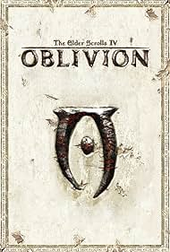
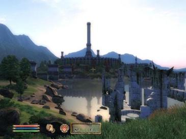
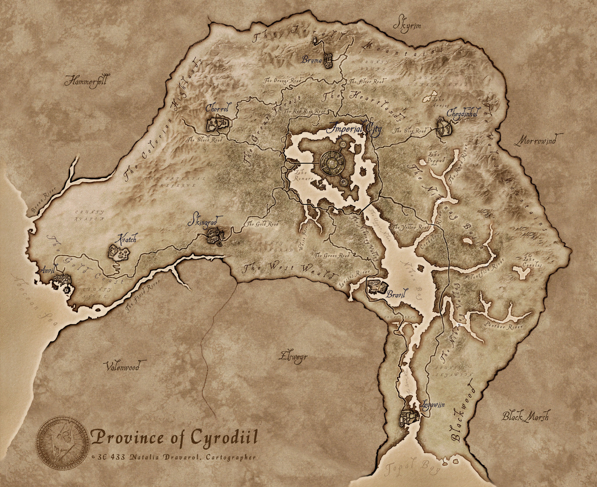
- Release date: 2006
- Platforms: Windows, Xbox 360, Playstation 3
- Engine: Gamebryo
Synopsis
The first fully-voiced Elder Scrolls game, which includes the voice talents of Sir Patrick Stewart, Oblivion was a very ambitious entry to the franchise. Alongside being fully voice acted, this game introduced "radiant AI" mechanics, which aimed to help the world feel more alive by offering its NPCs more freedom. In Oblivion, you play as the "Hero of Kvatch," and aid the emperor's son in repelling the demonic Daedra threat from Cyrodiil, the imperial capital in the heart of Tamriel.
The Elder Scrolls V: Skyrim
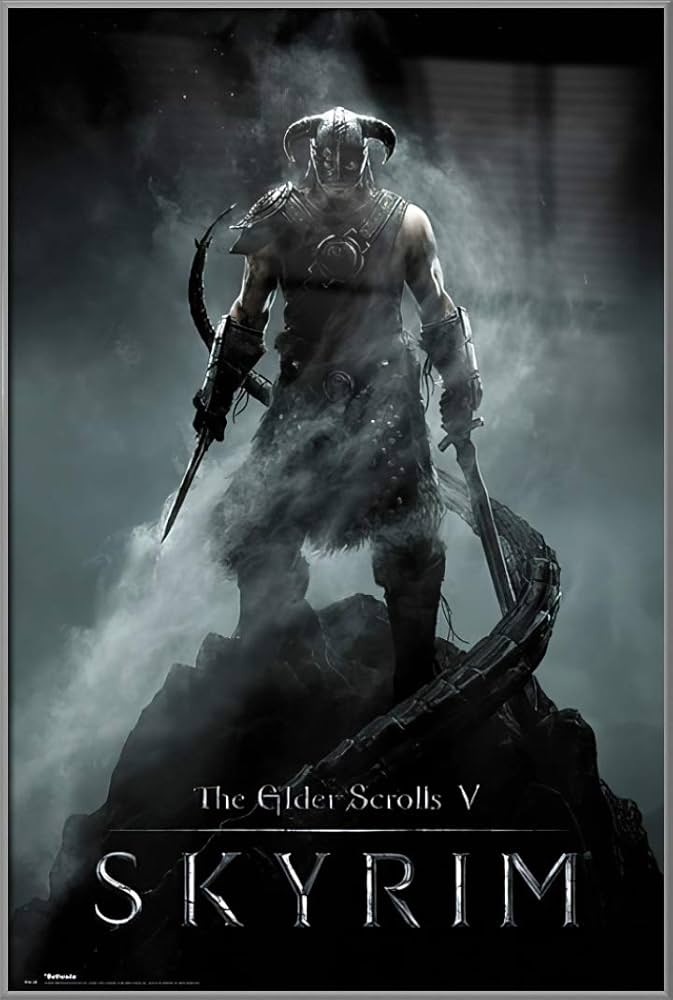

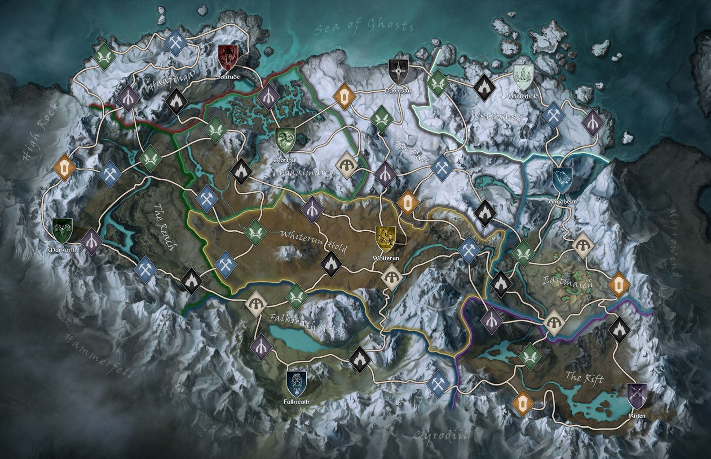
- Release date: 2011
- Platforms: Windows, Xbox 360, Playstation 3, Playstation 4, Xbox One, Nintendo Switch, Playstation 5, Xbox Series X/S, Nintendo Switch 2
- Engine: Creation Engine
Synopsis
Debatably the most popular entry of the franchise, Skyrim still maintains a fairly active community and sees regular official rereleases and console ports of the title. The game's story has you take the role of Dragonborn; someone who naturally posesses an expertise in "The Voice," an ancient draconic practice which allows its users to shape the world around them with powerful shouts.
The Elder Scrolls VI: Hammerfell
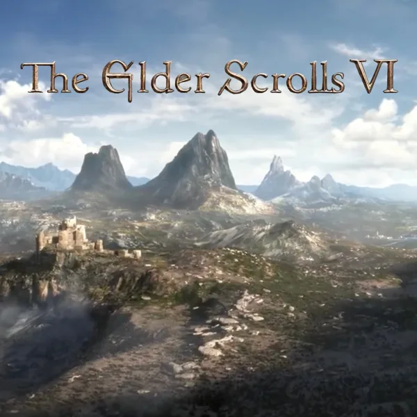
- Announced: 2018
- Platforms: Unknown
- Engine: Unknown
Synopsis
Nearly eight years ago, fans were given a short teaser announcing the sixth main installment in the Elder Scrolls franchise. No new information has been released since.